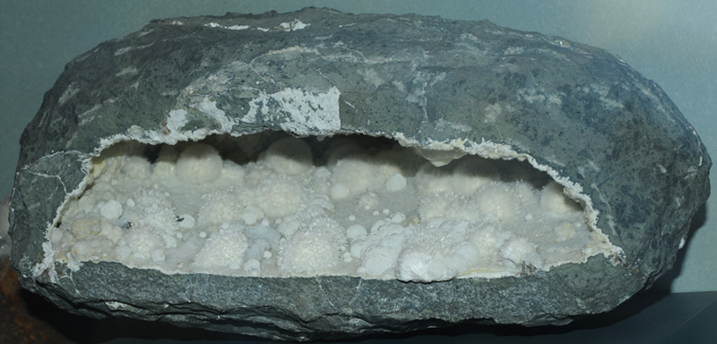
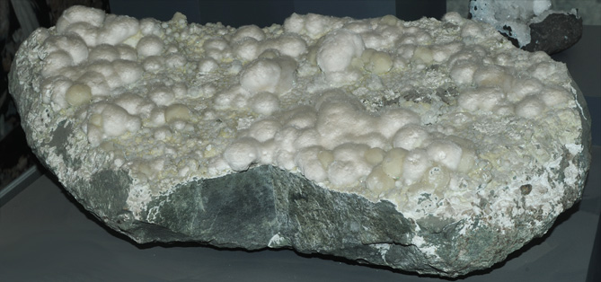
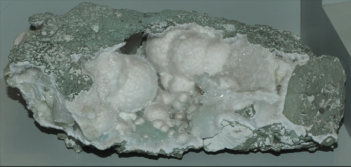

Okenite

Ca10Si18O46.18H2O
These samples of okenite are displayed in the Smithsonian Museum of Natural History. Okenite is a silicate mineral of calcium with the composition Ca10Si18O46.18H2O. The sample above is about 25 cm across and is from Bombay, Maharashtra, India.
|  | This sample of okenite is about 35 cm across and is from Bombay, Maharashtra, India. It is described as okenite with gyrolite. |
| This okenite specimen is about 25 cm long and is from Poona, Maharashtra, India. It is described as okenite with prehnite and quartz. | . |
Mindat: Okenite
|
Index |